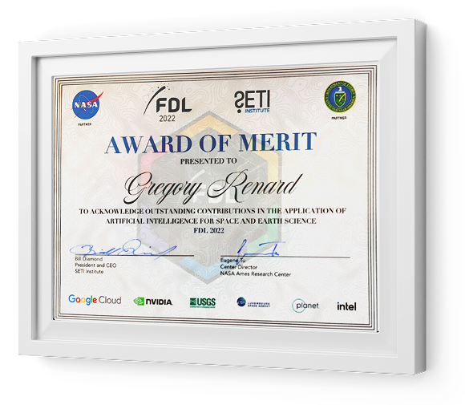

NASA · SETI · FDL.AI · U.S. DOE
{{ t.heroSub }}
{{ t.heroBio }}
{{ t.jP1 }}
{{ t.jP2 }}
{{ t.jP3 }}
{{ t.jPullPre }}{{ t.jPullName }}{{ t.jPullPost }}{{ t.jPullLink }} ↗
{{ t.jP4 }}
{{ t.jDoer }}
{{ t.jP5 }}
{{ t.jClose }}
“{{ t.mission }}”
{{ t.personalText }}
{{ t.recognitionTitle }}
{{ t.sectorsLead }}
{{ sec.d }}
{{ t.venturesIntro }}
I’ve made a habit of being early — setting the template for major technology trends, from semantic search in 1996 to agentic systems today.
A former math teacher and sociologist of NLP, I believe in a connected world where universal access to information and knowledge frees people to reach their full potential. Since 1996 I’ve worked on data pipelines and orchestrators at scale, unsupervised ML, deep learning for NLP, spoken dialogue systems, conversational platforms, Emotional AI and Multimodal AI.
I was eight when it began — though I had no words for it yet. My father, a CFO, would go to the office on weekends to deploy AS/400 systems, and I tagged along. I watched the terminals, the quiet discipline of machines that simply had to work because people and businesses depended on them. What I took from him wasn’t only a fascination with technology — it was resourcefulness: figuring things out, repairing, adapting, and never standing still, even when the path wasn’t obvious.
Very early, I felt computers were powerful but built the wrong way around. We had to type, click, search — to bend ourselves to the machine. I wanted the opposite: machines that understand us, starting with the most human interface we have — language. As a child, I was captivated by Ulysse 31, where the ship’s computer spoke with its crew. That talking machine planted a seed that never left me — and set me on the path to dialogue systems.
For close to seventeen years, that vision lived in the desert. People around me said it wouldn’t work — the technology wasn’t ready, the market wasn’t ready, the world wasn’t interested. I wasn’t waiting for AI to become fashionable. I kept building toward something I was certain had to exist.
Then came Angie — the assistant the press would call the “French Siri.” Minutes before going on, the Wi-Fi was collapsing, and every demo was live. Bernard Ourghanlian, my host on stage, called me up anyway. I asked the whole room to switch to airplane mode — “imagine you’re inside a giant 747” — and trusted the work. The first attempts stuttered. Then the connection came back, and Angie came alive: translating on command, hunting down the cheapest fuel nearby, and finally — unprompted — reminding me of a meeting at Bastille in thirty-five minutes. The room applauded. Years of quiet conviction, suddenly working live in front of everyone.Watch the moment ↗
Since then I’ve had the privilege to work with governments, global companies, universities and scientific institutions — including NASA. But the deeper lesson came later. As AI grew more powerful, I saw the risk: built in the wrong direction, it could replace more than it augments, centralize intelligence instead of sharing it, make people more dependent instead of more capable.
Through all of it, I never left the keyboard. I could have retreated into pure strategy; I chose to keep building. I’m convinced you only truly understand AI by making it work under real constraints, with your own hands — and that’s exactly where my method comes from: not theory, but thousands of hours shipping systems that had to run in the real world. I’m an architect who still builds.
So my work today isn’t only about building AI systems — it’s about building them in the right direction: to help people think, learn, create and decide with more dignity. Not just experts. Not just executives. Not one country or one industry. Everyone.
The best technology isn’t the one that replaces us. It’s the one that helps more people become capable.
“My mission is to positively impact more than one billion people — focusing on applied AI for good.”
Beyond the work: I’m a former math teacher, and I served five years as a volunteer firefighter. It started with a National Decoration for merit — awarded after I helped save people from a deadly fire; that moment is what led me to train at fire school and serve. A second National Decoration later recognized my work on ethical AI. I’ve also been a Guest AI Expert at the Institute for Advanced Study in Princeton — once home to Einstein, Gödel and Oppenheimer — invited for my fine-grained understanding of bias in language models.
It started with language. For more than 30 years I’ve built real-world AI — conversational AI, knowledge graphs, NLP, LLMs and agentic architectures. In 2012 I launched Angie — the “French Siri”, France’s first large-scale conversational platform (Techdays 2012). Since then I’ve advised governments and Fortune 500 companies, and shared the work on stage at TEDx, MIT, the Institute for Advanced Study, Stanford and Berkeley — with 50+ publications and patents and NASA’s 2022 Merit Award along the way.
First NLP architecture for call centers in the North of France — semantic search.
Co-founder of the French Developers Community — 3M+ members.
Industrialization of dynamic websites and web apps.
Launched a first Personal Digital Assistant industrialization platform (Watson demo — RTBF).
Oscaro.com — interconnected stockless supply chain supporting €300M+/year revenue.
Next-generation agentic workflows with Bright.AI, Docugami and Renault Group — operationalizing the essay & method. In 2025, built SRL4Children, an open-source agentic framework for Everyone.AI.
Models to infer human values and structure customer reviews 100× faster (Cerebra.ai); supported $50M+ fundraising across Plato, ZeroSystem and Cerebra.AI.
Satisfaction.AI at scale; AI for Humanity (France); European Commission AI Strategy; NASA.AI Technical Committee; IAS Princeton AI & Ethics guest.
Founded the Everyone.AI community; France AI & CNNum advisor; IronCar competition (ironcar.org).
Customer-service augmentation platform for email, chatbots and phone with Satisfaction.AI.
People2Vec.org project — learning human representations from language.
Car personal digital assistant platform for major car manufacturers.
My policy impact is equally concrete: co-initiator of AI4Humanity (2018), contributor to the France IA strategy (2017) and the Villani report (2018) anchoring France and Europe’s AI strategy, reserve member of the EU High-Level Expert Group on AI, and co-author of the Holberton-Turing Oath setting early ethical guard-rails for the industry.
Beyond industry, I co-founded the Sociology-NLP Research Group at UC Berkeley’s Matrix Department (2020) and teach the next generation of engineers — guest-lecturing at Stanford, the Institute for Advanced Study and UC Berkeley, and mentoring at Holberton School and 42 School. My portfolio spans a dozen issued AI patents and 200+ publications and talks — among them a Nature paper on generative AI and machine intelligence.
Invited as speaker, advisor or member of leading organizations
One common thread across two decades: I’ve shipped production-grade applied AI in these industries — at scale and on time.
Voice platforms for humanoid robots.
Watch ↗In-car personal-assistant platforms for major manufacturers.
Watch ↗Customer-service augmentation for global banks.
Watch ↗Supply-chain AI for stockless, large-scale retail.
Award-winning space-tech with NASA FDL.
Watch ↗Applied AI & agentic systems for a global construction & infrastructure leader (Eiffage Group).
Watch ↗Embedded edge orchestration — SLMs running on-device (NPUs) for real-time physical AI (Bright.AI).
Watch ↗As co-author of the Holberton-Turing Oath — inspired by the Hippocratic Oath — Gregory is a key figure in establishing ethical standards for human-centric AI, developed and used responsibly for the benefit of humanity.
More on ethics & AI →Code-Sources developer community.
15+ sites including Oscaro.com, Alain Prost and French sport federations.
Magma Mobile game studio.
SmartUse multitouch drafting platform.
Voice & connected car with Renault-Nissan & Oscaro.
AI for Humanity strategy.
NASA.AI — FDL applied-AI research.
I currently lead or advise applied-AI vision & strategy for ventures, labs, universities and non-profits — as co-founder, advisor or business angel: